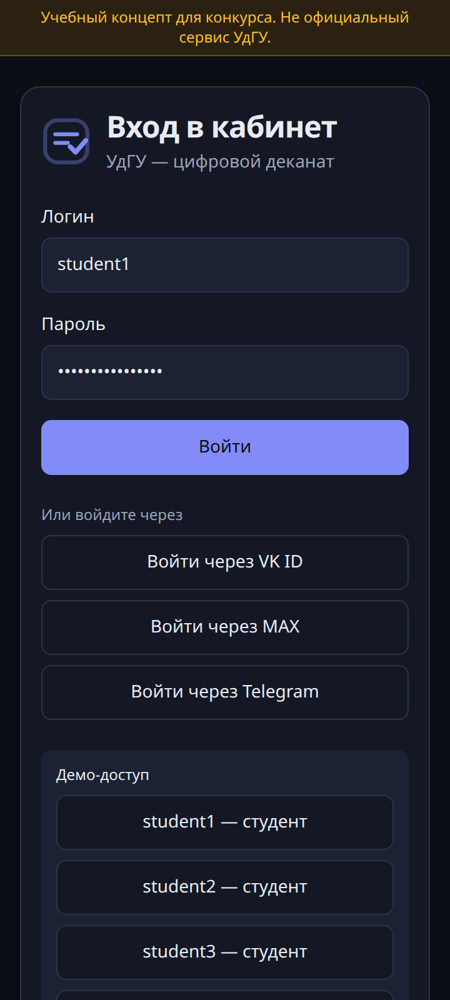
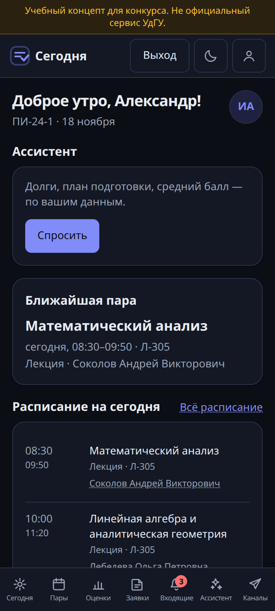
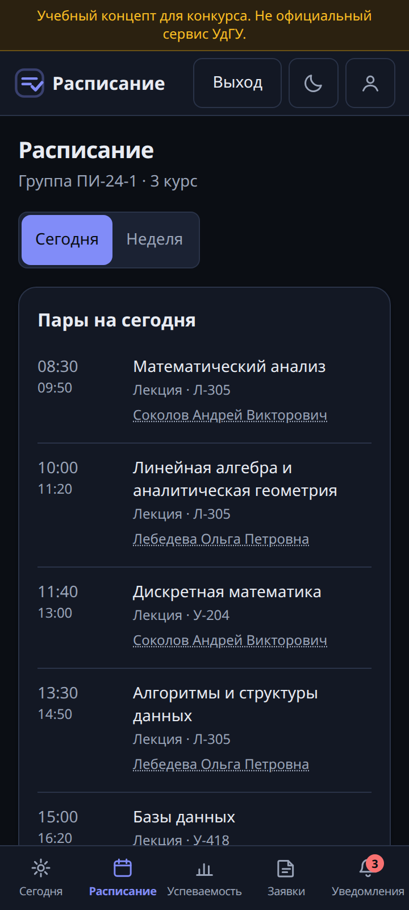
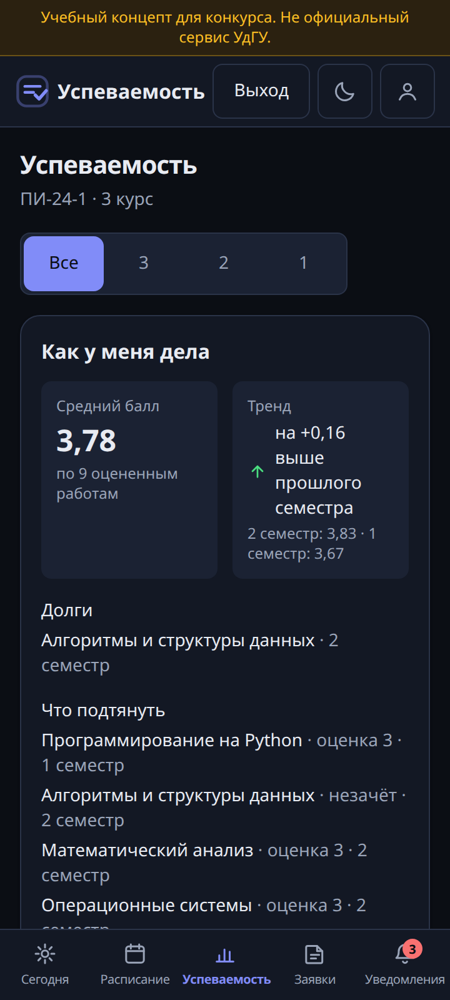
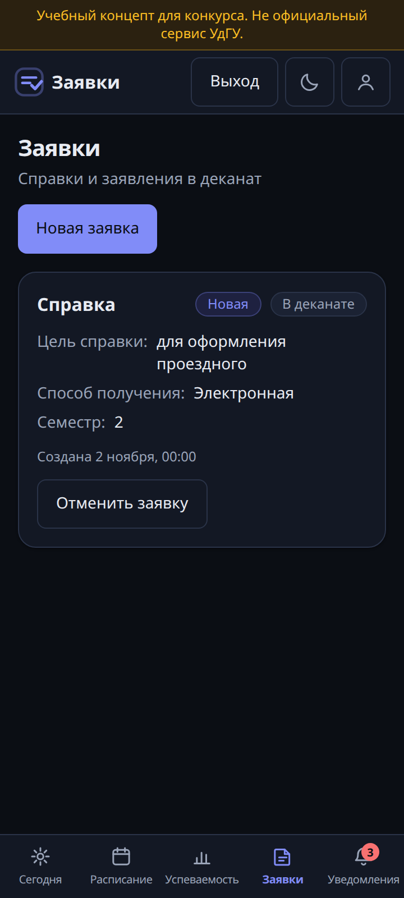
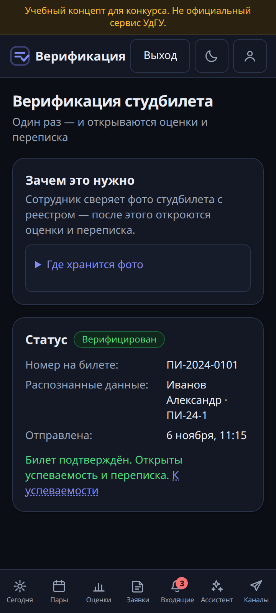
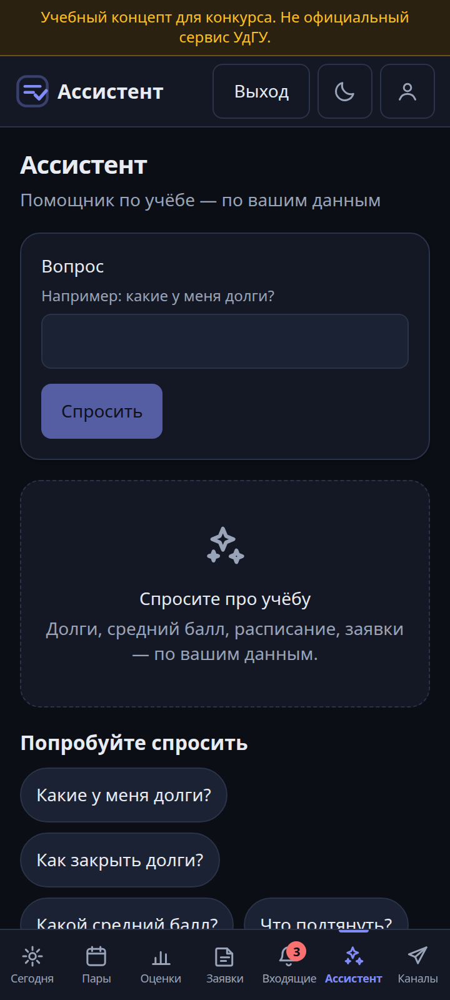
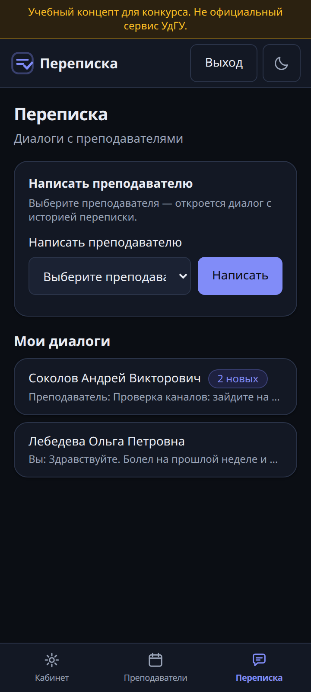
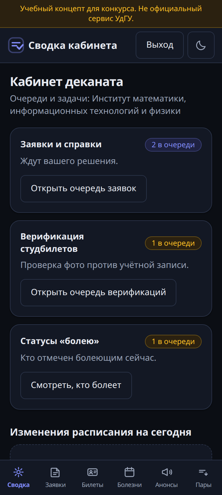
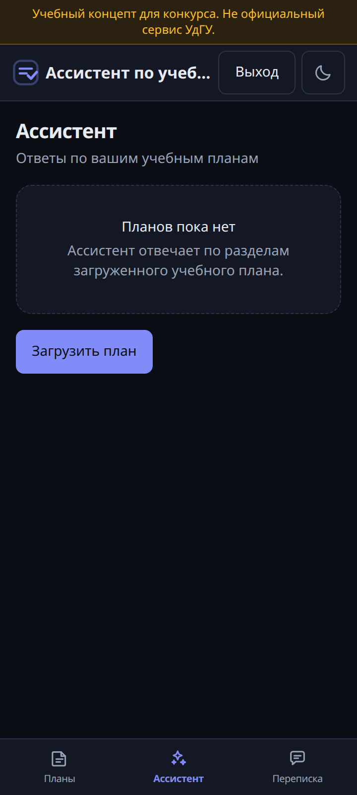

Цифровой деканат будущего
Описание процесса создания — конкурсный прототип личного кабинета студента Удмуртского государственного университета (УдГУ).
Демо (работает, без VPN из РФ):
https://177-3-196-28.nip.io/
Репозиторий:
github.com/alexeikrivilev-cyber/MGIMO_case_2
Тестовые входы:
student1, student2, staff1, teacher1, admin1
пароль aJMSwSxV_859b7A5 (кнопка «Демо-доступ» на экране входа)
Все данные вымышленные:
прототип — учебный концепт, не официальный сервис УдГУ
Коротко о результате: рабочий прототип, а не макет: 20+ экранов кабинета студента, преподавателя и сотрудника деканата, AI-ассистенты (студента и преподавателя с RAG), MCP-сервер для агентов деканата, боты Telegram / VK / MAX, верификация по студбилету, приватное хранилище файлов, тёмная тема, PWA, WCAG 2.2 AA. 583 автотеста, приёмка на проде 20/20. Весь код написан ИИ-агентами под управлением человека; человек ставил задачи, принимал работу по QA-гейту и выкладывал на прод.
1. Проблема и почему выбраны эти разделы
Учебная жизнь студента разбросана: расписание — на сайте, оценки — в отдельной системе, справки — через очередь в деканате, объявления — в чатах и на почте. С телефона это особенно неудобно. Кабинет собран вокруг реальных задач студента (jobs-to-be-done), а не вокруг структуры университета:
- «Что у меня сегодня по учёбе и всё ли в порядке?» — дашборд: приветствие по имени, ближайшая пара с меткой «когда» («Через 2 ч 15 мин»), расписание дня со свободными окнами, заявки с меткой «чей ход», непрочитанные, объявления.
- «Как у меня дела с учёбой и что подтянуть?» — успеваемость: средний балл, долги, тренд графиком, расчёт баллов до целевого среднего на оставшихся работах («леверидж»).
- «Как закрыть долг?» — AI-ассистент студента: план закрытия долгов с опорой на расписание и свободные окна.
- «Не идти бы в деканат за справкой» — заявки и справки онлайн со статусом и таймлайном.
- «Я болею» — отметка болезни на период; преподаватель и деканат видят статус.
- «Доказать, что я студент» — верификация по студбилету: до сверки закрыты оценки и переписка.
Разделы преподавателя и сотрудника деканата добавлены потому, что кейс прямо просит показать аккаунт сотрудника и разделение данных; AI-ассистент преподавателя с RAG по учебному плану, MCP-сервер и боты — потому что «деканат будущего» общается не только через сайт.
2. Как построена работа: человек и автономная команда ИИ
Проект делал один человек, управляя командой ИИ-агентов с телефона через мессенджер. Это не «один чат с нейросетью» — это выстроенная инженерная система автономной разработки:
- Сервер и шлюз. Свой сервер (Linux) с шлюзом OpenClaw: агенты работают круглосуточно и автономно, сессии стартуют и завершаются, а проект живёт неделями. Сервисы агентов — под systemd со сторожем (переживают падения), код пишется через выделенный сервер инженер-агента (порт 4096), дизайн-агент — в отдельном контейнере.
- Владелец — продукт и приёмка, не набор кода. Из Telegram: ставит задачи, получает отчёты по вехам, разбирает конфликты и ложные сдачи. Проект вёдется по этапам (P1.1 → P5, 20 этапов) и волнам доработок (7 волн) — каждый этап: ветка
feat/* → QA-гейт → мерж → деплой.
- Иерархия агентов (конституция проекта
AGENTS.md):
- Hermes — тимлид: разбирает brief, декомпозирует, ставит задачи воркерам, критикует и принимает результат, ведёт лог этапов.
- OpenCode — инженер: пишет весь код (монорепо, схема БД, домен, API, страницы, тесты).
- Open Design — визуальный QA и дизайн-артефакты.
- Council of High Intelligence — совет из 8 персон (Сократ, Фейнман, Торвальдс, Талеб и др.) для спорных решений: один прогон выбрал визуальное направление «Horizon Ledger» — гражданский инструмент, а не университетский портал.
- 28 навыков принятия решений
thinking-* (first-principles, pre-mortem, red-team, reversibility, margin-of-safety, ooda, cynefin…): каждая проблема или компромисс решается по именованной рамке, а не на глазок; выбранная рамка и решение фиксируются в логе — решения аудируемы.
- Процесс для агентов как продукт: трекер задач (
.scratch/), triage-лейблы, доменные документы (GLOSSARY, ADR), PRD и роадмап как единый источник правды, лог этапов с разбором ошибок. Без этого каждая новая сессия изобретала бы процесс заново и повторяла чужие ошибки.
- QA-гейт без доверия на слово. Отчёт воркера — самоотчёт, а не доказательство. Каждая сдача проверялась лично прогоном: typecheck во всех воркспейсах, полный прогон тестов, чистая прод-сборка, живые проверки на
next start (включая 360 px, клавиатуру, reduced-motion), финальная приёмка на проде по публичному URL. Самоприёмка воркером запрещена и удалялась из логов (см. §8).
- Guard-сторожа в тестах: утечка секретов, однородность отклика интерфейса, иконки в пустых состояниях, детерминизм сидера. Когда дизайн-обновление откатило 10 проверяемых фич — тесты это поймали, и фичи вернулись; тесты не ослаблялись ни разу.
3. Инструменты ИИ и зачем каждый
| Инструмент | Роль | Что делал |
|---|
| Hermes Agent | Тимлид, аналитика, QA-гейт | Чтение брифа, декомпозиция, постановка задач воркерам, приёмка, коммиты, деплой |
| OpenCode (инженер-воркер) | Инженер | Весь код: монорепо, Prisma-схема, сидер, домен, API, 20+ экранов, 583 теста |
| Open Design | Визуальный QA | Дизайн-артефакты, визуальная проверка экранов |
| Council of High Intelligence | Спорные решения | Выбор визуального/UX-направления («Horizon Ledger») |
| 28 навыков thinking-* | Рамки решений | Стек (обратимость), объём продукта (JTBD), риски (pre-mortem), проверка решений (red-team) |
| Веб-поиск (в составе Hermes) | Исследование | Открытые данные udsu.ru: институты и коды направлений УдГУ — для правдоподобной синтетики |
4. Ключевые промпты (суть по этапам)
Полные тексты — в логе этапов репозитория. Ниже — суть формулировок, которые определили качество.
- Фундамент (P1.1): «Построй npm workspaces монорепо: packages/db (Prisma 7 + сидер синтетики по архитектуре), packages/ui (токены), apps/web (Next.js 15 + Tailwind 4, экран входа). Жёсткие правила: не коммить, никаких заглушек
not implemented, секреты только через env. Обязательно сам проверь: install → migrate → seed → test → build → typecheck, и покажи вывод каждой команды.»
- Домен и безопасность (P1.3): «Никакая функция сервисов не принимает studentId извне — все принимают сессию и сами резолвят владельца; requireOwnStudent — единственная точка сравнения. Тесты: прямой IDOR — запросить данные student1 с сессией student2 → OwnershipError или пусто, НИКОГДА чужие данные.»
- API (P1.4a): «Middleware: security-заголовки; /staff и /admin → 404 (не 403 — студент не должен даже узнавать, что раздел есть). Маппинг ошибок: владение → 404 с обобщённым сообщением, иначе API становится оракулом существования чужих ID.»
- Страницы (P1.4b): «Мобильный 360px — first-class, не адаптация. Статусы кодируются формой И текстом, никогда только цветом. Никакого логотипа вуза.»
- AI-ассистент студента (P2): «Детерминированный движок: интенты (долги / план закрытия / средний балл / что подтянуть / расписание / заявки / уведомления / помощь). Ответы собираются из ТЕХ ЖЕ сервисов кабинета — studentId снаружи не принимается. План по долгам = предметы + два самых длинных свободных окна + леверидж до целевой оценки.»
- AI-ассистент преподавателя, RAG (P2): «Индекс ДЕТЕРМИНИРОВАННЫЙ: TF-IDF по чанкам плана (заголовок + абзацы, ~500 символов с перекрытием), без внешних зависимостей и облачных векторов. Русская токенизация: ё→е, стоп-слова. LLM опционален (env): в модель уходят ТОЛЬКО чанки плана владельца.»
- Боты каналов (P2): «Бот — тонкий адаптер, второй бизнес-логики нет: команда вызывает тот же сервис кабинета, что и страница сайта. Идентификатор аккаунта канала никогда не берётся из тела запроса. Без токена канала — честный статус DEMO, а не фейк-доставка.»
- MCP-сервер (P2-C): «Сервер не знает правил доступа: резолвит сессию по токену кабинета и вызывает сервисы ядра. Валидация сессии на каждый вызов: отзыв сессии отключает агента сразу. Токен никогда не логируется.»
5. Шаги от идеи до кабинета
| Этап | Что сделано |
|---|
| P1.1 Фундамент | Монорепо, схема БД (Prisma 7 + PostgreSQL 16), сидер синтетики, дизайн-токены, каркас web |
| P1.2 Пивот на УдГУ | Институты и реальные коды направлений УдГУ; модели верификации, OAuth, «болею», часов приёма; приватное хранилище |
| P1.3 Домен и безопасность | argon2id + httpOnly-сессии, владение данными, анти-IDOR, сервисы кабинета, мок-распознавание студбилета |
| P1.4 API и страницы | Middleware безопасности, все роуты /api/*, 20+ экранов кабинета, скелетоны и пустые состояния |
| P1.5 Качество | PWA (манифест, свой знак, service worker с оффлайн-оболочкой), WCAG 2.2 AA, паритет токенов, reduced-motion, тёмная тема |
| P2-A Кабинет сотрудника | Очереди заявок, верификаций, болезней; объявления; перенос и отмена пар; переписка студент↔преподаватель |
| P2-B Боты каналов | Telegram / VK / MAX как тонкие адаптеры над теми же сервисами; привязка кодом; outbox доставки; экран «Каналы» |
| P2 AI-ассистенты | Ассистент студента (детерминированный движок); ассистент преподавателя (RAG по учебному плану с цитатами) |
| P2-C MCP-сервер | 11 инструментов для агентов деканата, два транспорта (stdio, HTTP), авторизация токеном сессии кабинета |
| P3–P4 Оживление и сдача | Волны 1–5 «оживления» (motion-токены, stagger, рельс дня, таймлайн заявки, живой чат ассистента, иконки пустых состояний); деплой на Helsinki VPS, приёмка на проде |
| Волна 7 (финал) | Возврат всех сторожащихся фич в новый дизайн, исправление date-бага сидера, css-стаб тестов, чистка репозитория, новый README под критерии кейса |
6. Вход, данные и защита (простыми словами)
- Вход. Пароль сверяется с argon2id-хешем — сам пароль не хранится. При успехе создаётся сессия: случайный 32-байтный токен, в базу пишется только его SHA-256-хеш, сам токен уезжает в httpOnly-cookie (JavaScript до неё не дотянется — XSS не украдёт). CSRF-токен (двойная отправка) защищает изменения. Rate-limit: 5 неуспешных попыток за 15 минут.
- Регистрация. Через VK ID / MAX / Telegram — в прототипе эмуляция согласия (реальных ключей нет). Занятый логин не приводит к привязке провайдера: иначе можно было бы зайти в чужой кабинет, зная логин.
- Верификация. Фото студбилета попадает в приватное хранилище вне webroot — прямой ссылки нет, отдача только авторизованным владельцу и верификатору. «Распознавание» — честный мок: ищет номер в синтетическом реестре, ничего не выдумывая. До сверки закрыты успеваемость и переписка.
- Главное правило защиты данных. Ни один серверный сервис не принимает «чужой» идентификатор: все функции получают сессию и сами находят владельца. Если студент подставляет в URL чужой ID — он получает 404, а не 403: ответ «есть, но не ваш» подтверждал бы существование чужих данных и превращал API в оракул для перебора. Проверяется тестами IDOR и вручную подстановкой ID на проде.
- Секреты. Только в переменных окружения на сервере; в браузере — только httpOnly-cookie; в репозитории секретов нет (сторож-тест ищет). Боты и MCP-сервер наследуют те же правила: токен сессии равносилен паролю, валидируется на каждый вызов, никогда не пишется в логи.
7. Что делалось вручную (не ИИ)
- Выбор стека и архитектурных ограничений в рамках ориентиров кейса; решения принимались по рамке «обратимость»: дорого откатывать (БД, auth) — консервативно, дёшево (структура пакетов) — быстро.
- Декомпозиция на этапы и приоритизация P1–P4.
- QA-гейт: каждая сдача воркера проверялась лично прогоном, не по отчёту.
- Исправление дефектов, которые нашли только живые прогоны (таблица §8).
- Выкладка на Helsinki VPS: Docker-образ, перенос образа,
.env с секретами только на сервере, туннель до БД, Caddy + Let's Encrypt, порты в ufw.
- Написание документов процесса и логов этапов, этот документ.
8. Ошибки ИИ и как они исправлялись
Самый показательный раздел: воркеры уверенно сдают работу, которая не работает. Все случаи найдены QA-гейтом и живыми прогонами, а не отчётами.
| Что сдал ИИ | Как нашлось | Исправление |
|---|
| «Всё зелёное» на пивоте на УдГУ | 36/36 тестов, но в схеме остался вуз «Горизонт» | Пивот выполнен в том же этапе; в правила добавлена проверка домена, не только тестов |
| Валидация номера билета только латиницей | Живой прогон: ЮР-2024-0175 не проходил — реальный студент не смог бы верифицироваться | Регулярка расширена до \p{L}\p{N} + регрессионный тест |
| OAuth-callback требовал логин | Живой прогон HTTP (юнит-тесты пропустили): регистрация без логина падала с 400 | Логин необязателен, выводится из аккаунта провайдера |
| 17 ссылок с областью нажатия 17–22 px | Браузер на 360 px: нарушение WCAG 2.2 AA (норма 24 px) — юнит-тесты не видят | Минимальная высота целей; после правки 0 нарушений на всех экранах |
| Cookie с флагом Secure по HTTP | Выкладка: /staff отдавал 307 вместо 404 | Явный флаг SESSION_COOKIE_SECURE + поднят HTTPS (Caddy + Let's Encrypt) |
| Прод-сборка падала prerender при зелёных тестах | Предупреждение о non-standard NODE_ENV: мой же экспорт из .env | .env грузится только в подоболочке; перед сборкой проверяется NODE_ENV. Урок: красный билд при зелёных тестах — сначала подозревать окружение |
| Преподаватель после входа попадал на /staff, кабинет преподавателя не найти | Живой прогон: жюри не нашло бы раздел самостоятельно | Редирект по роли, ссылки из /staff и переписки, демо-план в сидере |
| Воркер сам закоммитил, написал в лог ложную «приёмку» и запушил | git log после волны: коммит воркера и мёрж без QA-гейта | История переписана на один честный коммит; в промпт воркера добавлен запрет merge/push; самоприёмка запрещена |
| Дизайн-обновление откатило 10 проверяемых фич | Guard-сторожа в тестах | Фичи возвращены в новом дизайне; тесты не ослаблялись |
9. Доказательства качества
| Проверка | Результат |
|---|
| TypeScript (все воркспейсы) | 5/5, 0 ошибок |
| Автотесты (домен, безопасность, IDOR, страницы, контраст, PWA, MCP, боты, инварианты сидера) | 583/583 (db 31 + core 285 + mcp 20 + web 247) |
| Прод-сборка | 57 маршрутов, зелёная |
| Живая приёмка на проде (публичный URL, из РФ без VPN) | 20/20: вход, все страницы кабинета, IDOR → 404, /staff студенту → 404, security-заголовки, без сессии → 401/307 |
| Мобильный сценарий | 360 px без горизонтального скролла на всех экранах; клавиатурная навигация с кольцом фокуса; prefers-reduced-motion |
| Контраст (WCAG AA) | Все пары «текст → поверхность» ≥ 4.5:1 в светлой и тёмной темах — закреплено тестами |
| Синтетические данные | Институты УдГУ, реальные коды направлений, 22 пользователя, 443 пары с переносами и отменами, 65 оценок; инварианты сидера держатся на любом стартовом дне |
10. Скриншоты ключевых экранов
Сняты на прое при ширине 360 px (мобильный сценарий — первый класс). На всех экранах виден баннер «Учебный концепт для конкурса. Не официальный сервис УдГУ.»

Вход: кнопка «Демо-доступ» подставляет логин и пароль; кнопки VK ID / MAX / Telegram

Дашборд: приветствие по имени, ближайшая пара с меткой «когда», свободные окна

Расписание: неделя, переносы и отмены заметными бейджами (текстом, не только цветом)

Успеваемость: «Как у меня дела» — средний балл, тренд, долги, что подтянуть

Заявки: статус с тегом «чей ход» и таймлайн истории

Верификация студбилета: загрузка фото в приватное хранилище, статус решения

AI-ассистент студента: ответ по своим данным — долги, окна для закрытия, леверидж

Переписка студент↔преподаватель: преподаватель видит ФИО и группу автора

Кабинет сотрудника деканата: сводка очередей института

AI-ассистент преподавателя: ответ по разделам учебного плана с цитатами
11. Что осталось дальше
- Реальные токены ботов (Telegram / VK / MAX) включаются одной переменной окружения — адаптеры уже написаны.
- Реальный OCR вместо мока в верификации студбилетов; подключение настоящего LLM-ключа для переформулировки ответов ассистентов.
- Интеграция MCP-сервера с агентами деканата по HTTP.
Документ подготовлен по материалам docs/PROCESS.md и лога этапов репозитория. Прототип — учебный концепт для конкурса; все данные вымышленные.